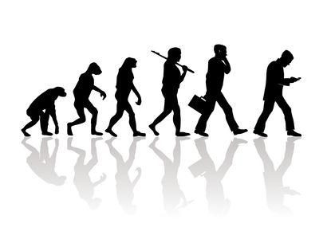
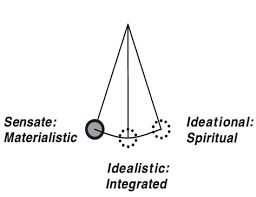
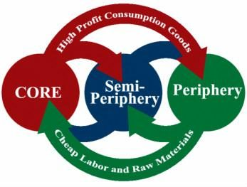

Social Change in Modern SocietyHigh priority
Pair every theory with a limitation, link technology and education to inequality, and bring Indian examples (reservation, digital divide, Super 30).
Chapter map#
- Social change
Theories
- Functional
- Conflict
- Evolutionary
- Cyclical
Cultural
- Sorokin
- Ogburn
- Weber
Agents
- Demography
- Education
- Technology
- State
- Movements
Development and dependency
- Frank
- Wallerstein
- Prebisch
- Amin
Science and technology
- Automation
- Reform
- COVID-19
Media
- Pluralist
- Frankfurt School
- Digital
Education
- Mobility
- Marxist critique
- Boudon
Exam lens#
The story first#
In simple words#
- Functionalists: gradual adaptation; Marxists: conflict; evolutionists: linear progress; Sorokin: cycles.
- Ogburn: material culture changes faster than non-material culture (cultural lag).
- Frank: development of underdevelopment; Wallerstein: core, semi-periphery, periphery.
- Technology and education both change society and can reproduce inequality.
| Term | In plain words |
|---|---|
| Social change | Transformation of society's structure, functions, values and norms over time. |
| Social Darwinism | Spencer's survival-of-the-fittest view of social evolution. |
| Cultural lag | Ogburn: non-material culture lags behind material culture. |
| Dependency | Poor countries' reliance on rich ones for capital, technology and markets. |
| Metropolis-satellite | Frank: surplus flows from periphery to capitalist centres. |
| World systems theory | Wallerstein: global capitalism divided into core, semi-periphery and periphery. |
| Techno-optimist | Sees technology as inherently positive. |
| Techno-neutralist | Sees technology as value-neutral. |
| Culture industry | Adorno and Horkheimer: commodified culture that discourages critical thought. |
| Meritocracy | Rewards by merit, which Marxists say hides inequality. |
1 · Social Change#
- Social change refers to transformation in the structure, functions, values, norms, and relationships within society over time.
- It reflects the continuous process through which societies evolve in response to economic, political, cultural, technological, and demographic forces.
- Sociologists have attempted to explain the nature, causes, direction, and consequences of social change through different theoretical perspectives.
2 · Sociological Theories of Social Change#
- Various sociological theories attempt to explain how and why societies change over time.
- Functionalists view change as gradual adaptation maintaining social order, Marxists emphasize conflict and contradictions, evolutionary theorists focus on progressive development, while cyclical theorists highlight recurring patterns of rise and decline.
3 · Functional and Conflict Theories of Social Change#
- Functionalist theories view society as an interrelated system whose various institutions work together to maintain stability and equilibrium.
- Social change occurs gradually as institutions adapt to changing social conditions.
- Emile Durkheim explained social change through the transition from mechanical solidarity in traditional societies to organic solidarity in modern industrial societies characterized by division of labour and interdependence.
- Talcott Parsons viewed social change as an adaptive and evolutionary process involving greater differentiation and specialization of institutions.
- Functionalists therefore emphasize consensus, integration, and orderly transformation.
- Conflict theories, particularly Marxism, view social change as the outcome of contradictions, inequality, and struggle between competing groups.
- Karl Marx argued that changes in the mode of production generate conflicts between classes, leading to structural transformation of society.
- According to Marx, history progresses through stages such as slavery, feudalism, capitalism, and socialism, each shaped by class conflict.
- Unlike functionalists, conflict theorists see conflict as the driving force of social change.
- Critics argue that functionalism overemphasizes stability and neglects inequality, while Marxism gives excessive importance to economic factors and class conflict.
4 · Evolutionary and Cyclical Theories of Social Change#
- Evolutionary and cyclical theories are among the earliest attempts to explain the pattern and direction of social change.
- While evolutionary theories view societies as progressing gradually from simple to complex stages in a linear manner, cyclical theories argue that societies and civilizations rise, decline, and regenerate in recurring historical cycles.
- Together, these theories seek to identify broad patterns underlying long-term social transformation.
5 · Evolutionary Theories#


- Evolutionary theories explain social change as a gradual movement from simple to complex forms of society.
- Herbert Spencer argued that societies evolve from simple and homogeneous structures to complex and heterogeneous ones through differentiation and integration.
- Spencer is regarded as the chief proponent of Social Darwinism.
- He identified stages of societal evolution, from simple to compound , doubly compounded , and trebly compounded societies, each representing a higher level of structural complexity.
- Auguste Comte proposed the Law of Three Stages:
- Theological stage
- Metaphysical stage
- Positive stage Ferdinand Tonnies explained social change through the transition from Gemeinschaft (community-based traditional society) to Gesellschaft (modern contractual society).
6 · Criticism of Evolutionary Theories#
- Linear View: These theories assume that all societies move in the same direction.
- Eurocentric Bias: They are largely based on the historical experience of Europe.
- Deterministic Nature: They treat progress as inevitable.
- Final-Stage Fallacy: Evolutionary theorists often posit an ultimate or final stage of social development (e.g., Comte’s positive stage).
- However, social change is a continuous and open-ended process without a fixed endpoint.
- Thus, many scholars today do not accept social evolution as universal or unilinear.
7 · Cyclical Theory#


- Cyclical theories reject the idea of continuous progress and argue that societies pass through recurring cycles of rise, decline, and regeneration.
- Pitirim Sorokin, in Social and Cultural Dynamics, argued that societies oscillate between three cultural orientations: Ideational culture
- Idealistic culture
- Sensate culture
- According to Sorokin, excessive materialism in sensate culture eventually creates crisis and leads societies back towards spiritual orientations.
- Thus, social change is viewed as repetitive and cyclical rather than linear.
8 · Cultural Theories of Social Change#
- Cultural theories of social change emphasize the role of ideas, values, beliefs, norms, religion, and cultural practices in shaping the direction and nature of social transformation.
- Unlike purely economic or technological explanations, these theories argue that changes in cultural systems and worldviews often become the driving force behind institutional and structural change in society.
- Pitirim Sorokin explained social change through shifts in dominant cultural mentalities, arguing that societies oscillate between ideational, sensate, and idealistic cultures.
- William F. Ogburn highlighted how rapid changes in material culture create a cultural lag because non-material culture such as values and laws adapt more slowly.
- Max Weber demonstrated how religious ideas, particularly the Protestant ethic, contributed to the rise of capitalism and modernity.
- In the Indian context, M. N. Srinivas explained social change through concepts such as Sanskritization, where lower castes adopt upper-caste practices and culture to improve their social status.
- Together, these approaches underline the importance of culture as an independent and dynamic force in social change.
- Critics argue that cultural theories of social change often overemphasize the role of ideas, values, and religion; while neglecting material conditions, economic structures, technology, and power relations.
- Marxist scholars particularly criticize cultural theories for ignoring class conflict and the role of economic forces in shaping society.
- Some cultural theories, such as that of Pitirim Sorokin, have also been criticized for being overly speculative and lacking empirical verification.
- Further, cultural explanations sometimes fail to explain why similar cultural values may produce different outcomes in different societies.
9 · Major Agents of Social Change#
- Social change occurs due to the interaction of multiple structural, cultural, technological, and political forces.
- Demographic Factors Changes in population size, structure, and composition influence patterns of social organization.
- Emile Durkheim linked demographic expansion to the transition from mechanical solidarity to organic solidarity, where social cohesion shifts from similarity to interdependence.
- Education Education promotes rationality, mobility, awareness, and modernization.
- Emile Durkheim viewed education as a means of transmitting societal norms and values.
- Education also facilitates social mobility and democratization.
- Science and Technology Science and technology are among the most powerful agents of social change.
- Industrialization, mechanization, communication technologies, and digitalization have transformed economic structures, lifestyles, family relations, and political processes.
- Religion Religion can both resist and promote social change.
- Max Weber, in The Protestant Ethic and the Spirit of Capitalism, showed how religious ethics influenced the rise of capitalism.
- Religious reform movements and revivalist movements have also contributed significantly to social transformation.\ State Governments and laws institutionalize social change through reforms and welfare policies.
- Measures such as abolition of untouchability, land reforms, reservation policies, and gender laws have transformed Indian society.
- Social Movements Social movements challenge existing inequalities and demand structural reforms.
- Movements such as Dalit movements, women’s movements, environmental movements, and farmers’ movements have contributed significantly to democratization and social justice.
- Economy Economic transformation significantly reshapes social structures and institutions.
- Industrialization, capitalism, globalization, and market expansion alter occupational patterns, class relations, lifestyles, and family structures.
- In essence, social change is multidimensional and results from the interaction of economic, political, cultural, technological, and ideological factors.
10 · Development and Dependency#
- Development refers to a process of economic growth, modernization, technological advancement, and improvement in the quality of life.
- However, sociologists argue that development is not merely economic growth; it also transforms social structures, institutions, values, and power relations.
- While development may generate opportunities, it can also produce inequality, displacement, dependency, and social conflict.
11 · Development and Social Change#
- Development acts as a major source of social change.
- Industrialization, urbanization, expansion of education, communication technologies, and globalization have transformed family structures, occupations, lifestyles, caste relations, and political participation in many societies.
- In India, development has contributed to:
- Expansion of middle classes
- Increased literacy and mobility
- Women’s participation in public life
- Growth of democratic awareness
- Decline of some traditional barriers At the same time, development has also generated:
- Regional inequalities
- Displacement due to dams and industries
- Ecological degradation
- Agrarian distress
- Informalization of labour Thus, societies undergoing rapid development often experience tensions, conflicts, and uneven transformation.
12 · Dependency Theory#
- Dependency theory emerged in Latin America during the 1960s as a critique of modernization theory.
- Thinkers such as Andre Gunder Frank, Raul Prebisch, and Samir Amin argued that underdevelopment in poorer countries is not due to internal backwardness alone, but because of their unequal integration into the global capitalist system.
- Dependency theorists argue that the world economy is divided into dominant developed nations and dependent underdeveloped nations.
- Poorer countries remain dependent on richer countries for:
- Capital
- Technology
- Markets
- Investment
- Industrial goods According to dependency theorists, colonialism integrated Asia, Africa, and Latin America into the capitalist world economy in subordinate positions.
- Even after political independence, dependency continues through neo-colonial mechanisms such as multinational corporations, unequal trade relations, foreign debt, and international financial institutions.
- Thus, dependency theorists reject the modernization view that all countries can develop by simply following the Western path.
13 · Features of Dependency#
- 1. Unequal exchange between developed and developing nations 2.
- Dependence on foreign capital and technology 3.
- Historical roots in colonialism 4. Continued neo-colonial economic domination 5.
- Role of local elites in sustaining dependency 6.
- Extraction of surplus from poorer regions
14 · Technology, Globalization and Dependency#
- Technology and globalization have accelerated both development and dependency.
- Technological progress has improved productivity, communication, healthcare, and education.
- Globalization has expanded trade, investment, and employment opportunities.
- However, developing countries often remain dependent upon advanced nations for:
- Technology
- Digital infrastructure
- Patents and innovation
- High-end manufacturing
- Financial capital This creates technological dependency and unequal globalization.
- At the same time, globalization has intensified labour insecurity, ecological degradation, and vulnerability to global economic crises.
15 · A.G. Frank and “Development of Underdevelopment”#
- Andre Gunder Frank argued that underdevelopment is not an original condition but a product of capitalist development itself.
- According to Frank, the world economy operates through a “metropolis-satellite structure” in which surplus is continuously transferred from the peripheral satellite regions to metropolitan capitalist centres.
- Frank termed this process the “development of underdevelopment.” Development in the capitalist core and underdevelopment in the periphery are therefore interconnected processes.
- Colonialism and capitalist penetration destroyed self-sufficient local economies and transformed them into dependent suppliers of raw materials and cheap labour.
- Frank argued that genuine development requires reducing dependency and pursuing autonomous, self-reliant economic growth.
16 · World Systems Theory#


- Immanuel Wallerstein expanded dependency analysis through World Systems Theory.
- He argued that capitalism should be understood as a global historical system divided into:
- 1. Core nations 2. Semi-periphery nations 3.
- Periphery nations Core countries possess advanced industries, technological dominance, and financial power.
- Peripheral countries largely supply raw materials and labour-intensive goods.
- Semi-peripheral countries occupy an intermediate position and display both exploitative and dependent characteristics.
- Unlike classical dependency theory, Wallerstein emphasized the stabilizing role of semi-peripheral countries such as India, Brazil, and South Africa within the capitalist world system.
17 · Criticism of Dependency Theory#
- 1. It overemphasizes external causes while neglecting internal issues such as corruption, governance failure, and social inequality.
- 2. It cannot adequately explain the rapid development of countries such as South Korea and Taiwan.
- 3. Excessive protectionism and isolation that dependency theorists advocate may hinder economic competitiveness.
- 4. Globalization has also created opportunities for growth and technological advancement in several developing countries.
- India has also reaped the benefits of global integration with consistently higher rate of economic growth since 1990s and substantial reduction in poverty levels.
- 5. Dependency theory is outdated in the post-Soviet world.
18 · Contemporary Relevance#
- Despite above criticisms, dependency theory remains relevant in understanding:
- Global economic inequalities, debt dependency, and technological monopolies.
- Unequal globalization and continued dominance of western multinational corporations.
- Barbara Stallings contends that countries like China are trying to create a dependency relationship with Latin America by providing technology and aid.
- Many developing countries continue to remain dependent on advanced capitalist economies for finance, technology, and global market access.
- In essence, development and dependency are deeply interconnected processes.
- While modernization and globalization create opportunities for growth and transformation, they may also reproduce inequalities and structural dependence within the global capitalist system.
19 · Science and Technology as Agents of Social Change#
- Science and technology have emerged as among the most powerful agents of social change in modern society.
- Scientific discoveries and technological innovations have transformed economic structures, political institutions, education, family life, communication, and cultural practices.
- The pace and direction of social change in contemporary society are increasingly shaped by technological advancement.
- The Industrial Revolution marked the beginning of large-scale technological transformation by replacing human and animal labour with machines and giving rise to industrial society.
- In the contemporary period, digital technologies have further transformed production, communication, governance, and everyday life.
- Technological development has increased efficiency, rationalization, and specialization.
- E-governance has improved transparency and delivery of public services.
- Digital technologies have transformed banking, commerce, healthcare, and education.
- Science and technology have also transformed education through online learning platforms, digital classrooms, and wider access to information.
- The internet and communication technologies have democratized knowledge and reduced barriers of time and space.
- Family life and social relationships have also changed due to technological advancement.
- Contraceptive technologies, IVF, social media, and digital communication have altered marriage patterns, reproductive choices, and interpersonal relations.
- Household technologies have reduced domestic drudgery and increased women’s participation in public life.
- At the same time, science and technology have contributed to rationalization and secularization by weakening superstitions and fatalistic beliefs.
- Scientific education encourages empirical reasoning and critical thinking.
- Max Weber described this process as the “disenchantment of the world.”
20 · Automation and Changing Nature of Work#

- Technological advancement and automation have significantly transformed the nature of work and employment.
- Positive changes include:
- 1. Increased productivity and efficiency 2.
- Growth of digital economy and new occupations 3.
- Remote work and flexible employment 4. Expansion of service-sector jobs However, automation has also generated several concerns:
- 1. Job displacement due to mechanization and AI 2.
- Informalization and contractualization of labour 3.
- Gig economy and platform-based precarious work 4.
- Deskilling and alienation of workers Karl Marx highlighted the alienating effects of mechanization, where workers lose control over the labour process.
- Thus, technology simultaneously creates opportunities and insecurities.
21 · Science, Technology and Social Reform#
- Science and technology have challenged age-old taboos, myths, and superstitions by promoting rationality and empirical thinking.
- Scientific advancements in medicine, reproductive health, and public hygiene have weakened fatalistic attitudes associated with disease, fertility, and death.
- Technologies such as DNA testing, organ transplantation, and assisted reproductive techniques have transformed traditional notions of purity, destiny, and divine will.
- Scientific education and digital dissemination of knowledge encourage questioning attitudes and critical inquiry.
- Auguste Comte viewed the rise of scientific reasoning as the transition towards the positive stage of society.
22 · Technological Impact#
- Different schools of thought have interpreted the impact of technology in contrasting ways.
- Techno-optimists like Marc Andreessen argue that technological advancement is inherently positive, improving comfort, efficiency, and communication, and making life easier and more productive.
- Techno-pessimists, however, stress its darker side - alienation, surveillance, environmental degradation, cybercrime, and the potential for destruction through weapons and ecological harm.
- In contrast, Techno-neutralists maintain that technology itself is value-neutral; it can be used for both constructive and destructive purposes depending on human intent and application.
23 · COVID-19 and Technological Transformation#
- The COVID-19 pandemic demonstrated the transformative role of science and technology in contemporary society.
- Scientific innovation in vaccine development, epidemiology, and digital health surveillance shaped state and societal responses to the crisis.
- Technology enabled work-from-home arrangements, online education, telemedicine, digital payments, and e-commerce.
- Governance also became increasingly technology-driven through digital monitoring and online welfare delivery.
- At the same time, the pandemic exposed digital inequalities, misinformation, surveillance concerns, and the digital divide between connected and excluded populations.
24 · Cultural Lag#
- William F. Ogburn concept of cultural lag explains the uneven pace of social change.
- According to Ogburn, material culture such as technology changes more rapidly than non-material culture such as values, beliefs, norms, and laws.
- This gap between technological innovation and social adaptation creates tensions and social problems.
- Examples include:
- 1. Slow social acceptance of IVF and reproductive technologies 2.
- Ethical dilemmas relating to artificial intelligence 3.
- Cybercrime and inadequate cyber laws 4. Vaccine hesitancy despite medical advancement The concept of cultural lag remains highly relevant in understanding contemporary technological change.
25 · Media as Agent of Social Change#
- Mass media has become a major modern agent of social change by shaping public opinion, disseminating knowledge, and highlighting issues.
- From a pluralist perspective, media strengthens democracy by promoting awareness, participation, and accountability.
- Social media platforms have democratized communication and enabled marginalized groups to voice their concerns.
- However, Marxist scholars argue that media often serves dominant class interests.
- Frankfurt School thinkers such as Theodor Adorno and Max Horkheimer criticized the “culture industry” for commodifying culture and discouraging critical thinking.
26 · Digital Media and Social Change#

- More recently, the rise of digital media has deep socio-political implications.
- It serves as a platform for activism, advocacy, and social movements.
- Being decentralized and largely unregulated, it allows voices that were previously marginalized to be heard.
- The Arab Spring in the early 2010s demonstrated the power of social media in mobilizing people against authoritarian regimes.
- Similarly, the anti-establishment protests in Nepal and various grassroots movements in India owe much of their strength to digital mobilization.
- Nouraie-Simone points out that digital media has given rise to cyberfeminism, creating safe and empowering online spaces for women to express themselves.
- The #MeToo movement is a striking example of how digital media became a platform for women to speak out against sexual harassment, challenge patriarchal norms, and demand accountability.
- Criticisms of Digital Media 1. Digital divide and unequal access 2.
- Surveillance capitalism and Algorithmic manipulation 3.
- Online harassment and trolling 4. Spread of misinformation, fake news, and low-quality content (Andrew Keen in The Cult of the Amateur)
- 5. Digital narcissism and inauthenticity (Andrew Keen in Digital Vertigo)
- 6. Social isolation and digital addiction (Cal Newport in Digital Minimalism) Thus, digital media can democratize communication and be liberating, but it also can reproduce inequalities and create new social problems.
27 · Science, Technology and Inclusive Development#
- Sociologists argue that democratization of science and technology is necessary for inclusive development.
- Technological advancement should not remain confined to privileged sections of society.
- Inclusive technological development requires:
- 1. Affordable digital access 2. Rural connectivity 3.
- Public investment in healthcare and education technology 4.
- Technological accessibility for marginalized groups 5.
- Reduction of digital divide Science and technology therefore need to be guided by ethical considerations and social justice.
- In essence, science and technology are dynamic and double-edged agents of social change.
- They have made societies more interconnected, rational, and productive, but have also created new inequalities, insecurities, and ethical dilemmas.
- The sociological challenge lies in ensuring that technological progress remains socially inclusive and oriented towards human welfare.
28 · Education and Social Change#

- Education occupies a central place in modern societies as a major institution responsible for transmitting knowledge, skills, values, and social norms.
- It links the individual with the wider social world and enables people to participate in economic, political, and cultural life.
- In rapidly changing societies, education is regarded as a major agent of social transformation capable of promoting modernization, mobility, democratization, and development.
- John Locke viewed the human mind astabula rasaand argued that personality and abilities are shaped through learning and experience.
- Education therefore becomes a transformative force that moulds individuals and expands human potential.
- Human capital theorists such as Gary Becker argue that investment in education enhances productivity, employability, and economic growth.
- Similarly, Amartya Sen and Martha Nussbaum, through the capabilities approach, regard education as a fundamental capability that expands human freedom, agency, and participation.
- From a functionalist perspective, education promotes social integration and meritocracy.
- Emile Durkheim argued that schools act as “society in miniature” where children learn discipline, cooperation, and collective values essential for social cohesion.
- Kingsley Davis and Wilbert Moore viewed education as a mechanism that allocates individuals to positions according to talent and competence.
- Modernization theorists such as Alex Inkeles and Daniel Lerner argue that education promotes rationality, scientific temper, achievement orientation, and occupational specialization, thereby facilitating transition from traditional to modern society.
29 · Education and Social Mobility#
- Education is often regarded as one of the most important channels of social mobility in contemporary societies.
- Expansion of schooling and higher education has enabled individuals from marginalized groups to access modern occupations, government jobs, urban employment, and middle-class lifestyles.
- Education has contributed to mobility among Dalits, OBCs, women, and tribal communities through reservations, scholarships, and state support.
- Popular films like Super 30 highlight the importance of education as a tool for social mobility Educational credentials increasingly determine access to employment, income, prestige, and occupational mobility.
- The expansion of technical, professional, and vocational education has further strengthened the role of education in economic advancement.
- However, schooling does not guarantee equal mobility for all sections of society because educational opportunities themselves are unequally distributed.
30 · Critical Perspectives on Education#
- Marxist scholars argue that education often reproduces rather than eliminates inequality.
- Louis Althusser described education as an important ideological tool through which capitalist societies reproduce and legitimize existing class relations.
- In Schooling in Capitalist America, Samuel Bowles and Herbert Gintis argued that schools reward obedience, punctuality, discipline, and conformity - traits required in capitalist workplaces.
- Further, the education system legitimizes inequality under the guise of meritocracy.
- Raymond Boudon argued that even when students enter the same educational system, differences in family background, parental support, expectations, and resources produce unequal outcomes.
- Thus, equality of opportunity does not necessarily produce equality of results.
- Empirical studies support these arguments.
- Research by Abigail McKnight shows that children from affluent families continue to enjoy major advantages in educational and occupational attainment despite abilities similar to those from humble backgrounds.
- In conclusion, education can possibly function as a source of mobility and progressive change, but continued prevalence of social inequality despite educational expansion, and unequal access to education itself, indicate the need for urgent educational reforms make it more inclusive and to fully harness its potential.
Traps#
| Trap | What goes wrong, and the rule |
|---|---|
| Frank vs Wallerstein | Frank: metropolis-satellite; Wallerstein: three-zone world system. Exam-hall rule: two-part vs three-part. |
| Sorokin appears twice | He is both a cyclical and a cultural theorist with the same three mentalities. Exam-hall rule: say which frame you use. |
| Cultural lag is about speed | Material culture changes faster than non-material culture; it is not about decline of culture. Exam-hall rule: say 'faster' and 'slower'. |
| Education both liberates and reproduces | Mobility channel versus Marxist reproduction thesis. Exam-hall rule: give both sides. |
| Dependency is contested | Critics note East Asian growth and India's gains after 1990s. Exam-hall rule: close with criticism. |
Recall sheet#
Read once, hide it, then rebuild the chapter from memory.
- Durkheim's change idea? Mechanical to organic solidarity
- Spencer's societies? Simple, compound, doubly compounded, trebly compounded
- Comte's three stages? Theological, metaphysical, positive
- Tonnies' shift? Gemeinschaft to Gesellschaft
- Three evolutionary criticisms? Linear, Eurocentric, deterministic
- Sorokin's book and cultures? Social and Cultural Dynamics; ideational, idealistic, sensate
- Ogburn's concept? Cultural lag
- Dependency theory began where and when? Latin America, 1960s
- Dependency thinkers named? Frank, Prebisch, Amin
- Frank's phrase? Development of underdevelopment
- Frank's structure? Metropolis-satellite
- Wallerstein's three zones? Core, semi-periphery, periphery
- Two counterexamples to dependency? South Korea and Taiwan
- Techno-optimist named? Marc Andreessen
- Adorno and Horkheimer's term? Culture industry
- Bowles and Gintis's book? Schooling in Capitalist America
- Boudon's point? Same school, unequal outcomes due to family background
- Locke's mind image? Tabula rasa
Abbreviation column#
| Short form | Full form | One-line meaning |
|---|---|---|
| COVID-19 | Coronavirus disease 2019 | Pandemic and technology section |
| UNDP | United Nations Development Programme | Sustainable Development Goals report in PYQ |
| SDG | Sustainable Development Goals | UNDP report named in PYQ |
| IVF | In vitro fertilisation | Example of cultural lag |
| OBC | Other Backward Classes | Education and mobility |
| DNA | Deoxyribonucleic acid | Science and reform example |
| PYQ | Previous Years' Questions | Questions UPSC has already asked |
Revise#
| Day | What to do |
|---|---|
| Day 0 | Read the Exam lens and the notes; mark the chapter done |
| Day +1 | Recall sheet: read once, hide, rebuild |
| Day +3 | Flashcards: missed ones only |
| Day +7 | Quick quiz; fix each miss against the Traps |
| Day +21 | Write two Mains answers from memory using the skeletons |
| Day +45 | Blank-page test: redraw the chapter map |
Test yourself#
Quick quiz
Flashcards
Tap the card to flip.
Mains answer skeletons
One for each Mains PYQ quoted in the handout. Tap to open; try the answer first.
2025 · 20 marks · What do you understand by sustainable development? Discuss the elements of sustainable development a…
Question. What do you understand by sustainable development? Discuss the elements of sustainable development as proposed in the UNDP's Sustainable Development Goals Report-2015.
- Intro: name Social Change in Modern Society and state the central idea in one line (see The story first).
- Body: build the answer from the notes under: Development and Social Change.
- Close: finish with the matching criticisms section and a one-line judgement.
2025 · 10 marks · To what extent can education and skill development be an agent of social change? Critically analyze.
Question. To what extent can education and skill development be an agent of social change? Critically analyze.
- Intro: name Social Change in Modern Society and state the central idea in one line (see The story first).
- Body: build the answer from the notes under: Education and Social Change.
- Close: finish with the matching criticisms section and a one-line judgement.
2024 · 10 marks · Critically assess the impact of technological advancement and automation on the nature of work and e…
Question. Critically assess the impact of technological advancement and automation on the nature of work and employment.
- Intro: name Social Change in Modern Society and state the central idea in one line (see The story first).
- Body: build the answer from the notes under: Automation and Changing Nature of Work.
- Close: finish with the matching criticisms section and a one-line judgement.
2024 · 10 marks · Critically examine the World-Systems theory of Immanuel Wallerstein in terms of development and depe…
Question. Critically examine the World-Systems theory of Immanuel Wallerstein in terms of development and dependency of various nations.
- Intro: name Social Change in Modern Society and state the central idea in one line (see The story first).
- Body: build the answer from the notes under: World Systems Theory; Dependency Theory; Contemporary Relevance.
- Close: finish with the matching criticisms section and a one-line judgement.
2024 · 20 marks · Discuss various theories of social change. Explain the limitations of unilinear theory of social cha…
Question. Discuss various theories of social change. Explain the limitations of unilinear theory of social change.
- Intro: name Social Change in Modern Society and state the central idea in one line (see The story first).
- Body: build the answer from the notes under: Sociological Theories of Social Change; Evolutionary Theories; Criticism of Evolutionary Theories.
- Close: finish with the matching criticisms section and a one-line judgement.
2024 · 10 marks · Critically examine the roles of science and technology in social change. What is your opinion on the…
Question. Critically examine the roles of science and technology in social change. What is your opinion on the increasing trend in ‘online’ education and teaching?
- Intro: name Social Change in Modern Society and state the central idea in one line (see The story first).
- Body: build the answer from the notes under: Science and Technology as Agents of Social Change.
- Close: finish with the matching criticisms section and a one-line judgement.
2023 · 10 marks · Examine the role of science and technology in addressing age-old taboos and superstitions.
Question. Examine the role of science and technology in addressing age-old taboos and superstitions.
- Intro: name Social Change in Modern Society and state the central idea in one line (see The story first).
- Body: build the answer from the notes under: Science, Technology and Social Reform; Science and Technology as Agents of Social Change.
- Close: finish with the matching criticisms section and a one-line judgement.
2023 · 10 marks · Assess critically A. G. Frank's theory of development of underdevelopment'.
Question. Assess critically A. G. Frank's theory of development of underdevelopment'.
- Intro: name Social Change in Modern Society and state the central idea in one line (see The story first).
- Body: build the answer from the notes under: A.G. Frank and “Development of Underdevelopment”.
- Close: finish with the matching criticisms section and a one-line judgement.
2022 · 20 marks · Are traditional social institutions getting weakened as agents of social change in the contemporary …
Question. Are traditional social institutions getting weakened as agents of social change in the contemporary society? Substantiate.
- Intro: name Social Change in Modern Society and state the central idea in one line (see The story first).
- Body: build the answer from the notes under: Major Agents of Social Change.
- Close: finish with the matching criticisms section and a one-line judgement.
2022 · 20 marks · Sociologists argue for democratization of science and technology for inclusive development. Comment.
Question. Sociologists argue for democratization of science and technology for inclusive development. Comment.
- Intro: name Social Change in Modern Society and state the central idea in one line (see The story first).
- Body: build the answer from the notes under: Science, Technology and Inclusive Development; Science and Technology as Agents of Social Change.
- Close: finish with the matching criticisms section and a one-line judgement.
2021 · 20 marks · Critically examine the contribution of dependency theories in understanding the present global scena…
Question. Critically examine the contribution of dependency theories in understanding the present global scenario.
- Intro: name Social Change in Modern Society and state the central idea in one line (see The story first).
- Body: build the answer from the notes under: Dependency Theory; Contemporary Relevance.
- Close: finish with the matching criticisms section and a one-line judgement.
2021 · 20 marks · Discuss the role of social media in communal polarisation. Suggest ways to combat it. (Paper 2, 2021…
Question. Discuss the role of social media in communal polarisation. Suggest ways to combat it. (Paper 2, 2021/II/8a/20) 7. Describe the role of Science & Technology in enabling us to face the challenges triggered by the COVID - 19 pandemics.
- Intro: name Social Change in Modern Society and state the central idea in one line (see The story first).
- Body: build the answer from the notes under: Digital Media and Social Change; COVID-19 and Technological Transformation.
- Close: finish with the matching criticisms section and a one-line judgement.
2020 · 20 marks · Technology has accelerated the process of development and dependency. Discuss
Question. Technology has accelerated the process of development and dependency. Discuss
- Intro: name Social Change in Modern Society and state the central idea in one line (see The story first).
- Body: build the answer from the notes under: Dependency Theory; Contemporary Relevance; Technology, Globalization and Dependency.
- Close: finish with the matching criticisms section and a one-line judgement.
2020 · 10 marks · Education is often viewed as an agency of social change. However, in reality it could also reinforce…
Question. Education is often viewed as an agency of social change. However, in reality it could also reinforce inequalities and conservatism. Discuss.
- Intro: name Social Change in Modern Society and state the central idea in one line (see The story first).
- Body: build the answer from the notes under: Critical Perspectives on Education.
- Close: finish with the matching criticisms section and a one-line judgement.
2020 · 20 marks · Is humanity at the mercy of Nature, Science, and Technology? Comment in the light of the pandemic si…
Question. Is humanity at the mercy of Nature, Science, and Technology? Comment in the light of the pandemic situation.
- Intro: name Social Change in Modern Society and state the central idea in one line (see The story first).
- Body: build the answer from the notes under: COVID-19 and Technological Transformation.
- Close: finish with the matching criticisms section and a one-line judgement.
2020 · 20 marks · How does Marx view social conflict as an essential element in social change?
Question. How does Marx view social conflict as an essential element in social change?
- Intro: name Social Change in Modern Society and state the central idea in one line (see The story first).
- Body: build the answer from the notes under: Functional and Conflict Theories of Social Change.
- Close: finish with the matching criticisms section and a one-line judgement.
2020 · 20 marks · According to Durkheim, "The major function of education is the transmission of society's norms and v…
Question. According to Durkheim, "The major function of education is the transmission of society's norms and values." Discuss.
- Intro: name Social Change in Modern Society and state the central idea in one line (see The story first).
- Body: build the answer from the notes under: Education and Social Change.
- Close: finish with the matching criticisms section and a one-line judgement.
2019 · 10 marks · Criticize A.G. Frank's 'development of underdevelopment'.
Question. Criticize A.G. Frank's 'development of underdevelopment'.
- Intro: name Social Change in Modern Society and state the central idea in one line (see The story first).
- Body: build the answer from the notes under: A.G. Frank and “Development of Underdevelopment”.
- Close: finish with the matching criticisms section and a one-line judgement.
2019 · 10 marks · Discuss the issues of access and exclusion in higher education in India.
Question. Discuss the issues of access and exclusion in higher education in India.
- Intro: name Social Change in Modern Society and state the central idea in one line (see The story first).
- Body: build the answer from the notes under: Education and Social Mobility.
- Close: finish with the matching criticisms section and a one-line judgement.
2019 · 20 marks · Feminist scholars argue that 'New media' is masculine and hence reinforces structural hierarchies ra…
Question. Feminist scholars argue that 'New media' is masculine and hence reinforces structural hierarchies rather than reconfiguring them. Comment.
- Intro: name Social Change in Modern Society and state the central idea in one line (see The story first).
- Body: build the answer from the notes under: Digital Media and Social Change.
- Close: finish with the matching criticisms section and a one-line judgement.
2018 · 20 marks · Schooling does not ensure upward mobility of all members of the society. Discuss with reference to c…
Question. Schooling does not ensure upward mobility of all members of the society. Discuss with reference to class societies.
- Intro: name Social Change in Modern Society and state the central idea in one line (see The story first).
- Body: build the answer from the notes under: Critical Perspectives on Education.
- Close: finish with the matching criticisms section and a one-line judgement.
2018 · 10 marks · Is the theory of cultural lag valid in present times? Discuss.
Question. Is the theory of cultural lag valid in present times? Discuss.
- Intro: name Social Change in Modern Society and state the central idea in one line (see The story first).
- Body: build the answer from the notes under: Cultural Lag.
- Close: finish with the matching criticisms section and a one-line judgement.
2017 · 20 marks · Critically analyze the role of science and technology in bringing about social change.
Question. Critically analyze the role of science and technology in bringing about social change.
- Intro: name Social Change in Modern Society and state the central idea in one line (see The story first).
- Body: build the answer from the notes under: Science and Technology as Agents of Social Change.
- Close: finish with the matching criticisms section and a one-line judgement.
2017 · 20 marks · Examine any two theories of social change in detail.
Question. Examine any two theories of social change in detail.
- Intro: name Social Change in Modern Society and state the central idea in one line (see The story first).
- Body: build the answer from the notes under: Sociological Theories of Social Change; Evolutionary Theories.
- Close: finish with the matching criticisms section and a one-line judgement.
2017 · 10 marks · Assess the role of mass media as an agent of social change.
Question. Assess the role of mass media as an agent of social change.
- Intro: name Social Change in Modern Society and state the central idea in one line (see The story first).
- Body: build the answer from the notes under: Media as Agent of Social Change.
- Close: finish with the matching criticisms section and a one-line judgement.
2016 · 20 marks · “Education is a major source of Social Mobility in contemporary society”. Explain.
Question. “Education is a major source of Social Mobility in contemporary society”. Explain.
- Intro: name Social Change in Modern Society and state the central idea in one line (see The story first).
- Body: build the answer from the notes under: Education and Social Mobility.
- Close: finish with the matching criticisms section and a one-line judgement.
2016 · 20 marks · "Social change can be brought about through development". Illustrate from the contemporary situation…
Question. "Social change can be brought about through development". Illustrate from the contemporary situation of India.
- Intro: name Social Change in Modern Society and state the central idea in one line (see The story first).
- Body: build the answer from the notes under: Development and Social Change.
- Close: finish with the matching criticisms section and a one-line judgement.
2016 · 10 marks · "Social conflict is both a cause and a consequence of social change." Explain.
Question. "Social conflict is both a cause and a consequence of social change." Explain.
- Intro: name Social Change in Modern Society and state the central idea in one line (see The story first).
- Body: build the answer from the notes under: Functional and Conflict Theories of Social Change.
- Close: finish with the matching criticisms section and a one-line judgement.
2015 · 20 marks · “Education helps in perpetuating social and economic inequalities.” Critically examine the statement…
Question. “Education helps in perpetuating social and economic inequalities.” Critically examine the statement.
- Intro: name Social Change in Modern Society and state the central idea in one line (see The story first).
- Body: build the answer from the notes under: Critical Perspectives on Education.
- Close: finish with the matching criticisms section and a one-line judgement.
2015 · 10 marks · Explain the relevance of the idea of 'cultural lag' in understanding social change.
Question. Explain the relevance of the idea of 'cultural lag' in understanding social change.
- Intro: name Social Change in Modern Society and state the central idea in one line (see The story first).
- Body: build the answer from the notes under: Cultural Lag.
- Close: finish with the matching criticisms section and a one-line judgement.
2014 · 20 marks · How is the increasing use of technology changing the status of women in Indian society?
Question. How is the increasing use of technology changing the status of women in Indian society?
- Intro: name Social Change in Modern Society and state the central idea in one line (see The story first).
- Body: build the answer from the notes under: Science and Technology as Agents of Social Change.
- Close: finish with the matching criticisms section and a one-line judgement.
2014 · 20 marks · Write a short essay on the Latin American perspective on 'dependency'.
Question. Write a short essay on the Latin American perspective on 'dependency'.
- Intro: name Social Change in Modern Society and state the central idea in one line (see The story first).
- Body: build the answer from the notes under: Dependency Theory; Contemporary Relevance.
- Close: finish with the matching criticisms section and a one-line judgement.
2013 · 20 marks · Critically examine the cultural theories of social change with suitable examples.
Question. Critically examine the cultural theories of social change with suitable examples.
- Intro: name Social Change in Modern Society and state the central idea in one line (see The story first).
- Body: build the answer from the notes under: Sociological Theories of Social Change; Evolutionary Theories; Cultural Theories of Social Change.
- Close: finish with the matching criticisms section and a one-line judgement.
2013 · 20 marks · Illustrate the conflicts and tensions experienced by societies undergoing social change.
Question. Illustrate the conflicts and tensions experienced by societies undergoing social change.
- Intro: name Social Change in Modern Society and state the central idea in one line (see The story first).
- Body: build the answer from the notes under: Functional and Conflict Theories of Social Change.
- Close: finish with the matching criticisms section and a one-line judgement.
2013 · 10 marks · Examine science and technology as agents of social change. (150 words)
Question. Examine science and technology as agents of social change. (150 words)
- Intro: name Social Change in Modern Society and state the central idea in one line (see The story first).
- Body: build the answer from the notes under: Science and Technology as Agents of Social Change.
- Close: finish with the matching criticisms section and a one-line judgement.